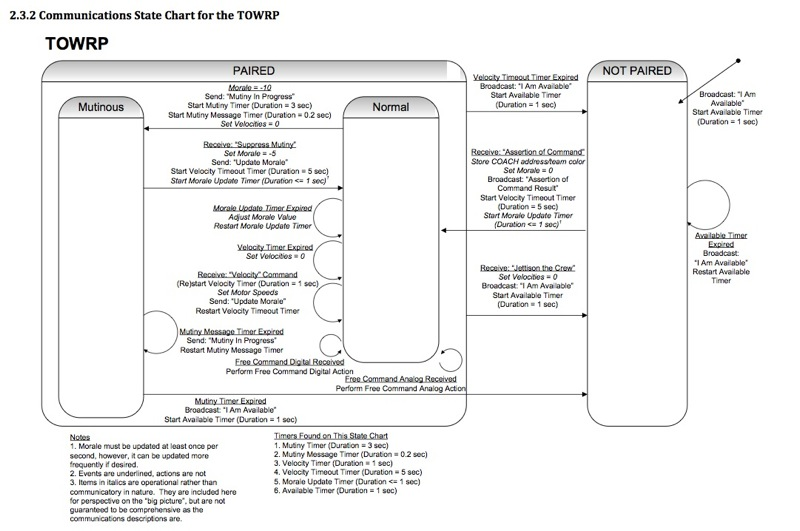

TOWRP Master
Files:
TOWRP State Diagram:

Pseudo-Code
TRANSMIT TABLE:
jump to correct entry in table
return start delimiter
return lenght MSB
return length LSB
return transmit API
return frameID
return paired MSB (variable)
return paired LSB (variable)
return options
return transmit opcode (variable)
return transmit parameter (variable)
return transmit checksum (variable)
RECEIVE TABLE:
jump to correct entry in table
for each byte, first empty byte box into w
for bytes 1-5
for each byte, compare equality with what it should be if it is a fixed value
if equal,
simply return
if not equal,
set the discard message flag
return
for byte 6
save w into sourceLSB (in case of assertion of command)
test if pairedID is equal to no controller
if yes, return
test if pairedID matches sourceLSB
if yes, return
if no, set set discard message flag, return
for bytes 7-10
save value in w into a variable for storage (checksum calculation and later access)
return
for byte 11
save value in w to compare with checksum result
calc checksum
start with 0
add required bytes together, ignoring overflow
check if the sum total 0xff
if it does, return
if it does not, set the discard message flag
return
INTERRUPTS PRIORITY:
Timer0
Transmit Asynch
Receive Asynch
TRANSMIT INTERRUPT:
(this interrupt takes 10ms per packet!)
test if interrupt is enabled
return if transmit interrupts not enabled
move transmit counter to w
jump to table
write value in w from table to transmit register, also clears interrupt flag
increment transmit counter
move total bytes to w
compare equality with transmit counter
if not equal, end interrupt
if equal
set flag to indicate that packet transmit is completed
disable transmit timeout timer
disable transmit interrupt
end transmit service routine
TRANSMIT COMPILE:
(it takes 60us to assemble message in preparation for transmit)
test if ready to transmit new packet
if yes, assemble and send message
else return - don't transmit if not ready!
this is a boat, so only talk to controllers - move to pairedMSB
move pairedID to pairedLSB - this is what allows different controllers to pair with our boat!
test if transmit mutiny message flag is set
if no, skip ahead to next test
move mutiny opcode in transmit opcode
move anything into transmit parameter
test if transmit available message flag is set
if no, skip ahead to next test
set broadcast for paired MSB and paired LSB
move available opcode in transmit opcode
move anything into transmit parameter
test if transmit assertion of command result message flag is set
if no, skip ahead to next test
set broadcast for paired MSB and paired LSB
move AOC result opcode in transmit opcode
move pairedID into transmit parameter
test if transmit update morale message flag is set
if no, skip ahead to next test
move update morale opcode in transmit opcode
call convert morale function
move morale value into transmit parameter
calculate checksum
start off with 0
add required bytes together, ignoring overflow
subtract sum of bytes from 0xff
store in tx_checksum
clear all transmit flags before transmit
set transmit counter to 0
clear transmit status flag to indicate that packet transmit is now in progress
enable transmit timeout timer
transmit interrupt enable - this starts send of message
return
RECEIVE INTERRUPT:
(takes 11ms to receive a packet)
test if discard message flag is set
if discard flag is set
start a new msg by clearing the counter and the discard message flag
read received value into w
save w in the bytebox
move recieve counter to w
jump to table
increment receive counter
test to see if packet is finished transmitting here!
move total bytes to w
compare equality with rc_counter
if not equal, end receive service routine
if equal, perform end of packet procedure
set receive counter to 0
test to see if discard message flag was set
if no, save the data that came in, then return
if yes, reset discard message flag for next round, return
SAVERCDATA:
clear opcodes because they're not always cleared elsewhere
empty received byte 9 into W
test if opcode received is SUPPRESS MUTINY
if yes, set receive opcode flag, disregard paramter bit
test if opcode received is ASSERTION OF COMMAND
if yes, set receive opcode flag and save receive parameter as the new team color. also save to paired ID, because command was asserted.
test if opcode received is JETTISON CREW
if yes, set receive opcode flag, disregard paramter bit
test if opcode received is VELOCITY
if yes, set receive opcode flag and save receive parameter as the velocity
test if opcode received is FREE DIGITAL
if yes, set receive opcode flag, disregard paramter bit
test if opcode received is FREE ANALOG
if yes, set receive opcode flag and save receive parameter as free analog value
TIMER0 OVERFLOW:
updates the following timers: transmit timeout timer, velocity timeout timer, mutiny timer, velocity timer, available timer, morale timer, mutiny message timer
clear timer0 flag
repeat:
test if this timer is enabled, otherwise skip to next timer
if enabled
increment this timer
put this timer into w
XOR with number of overflows that corresponds to expired time interval
if equal, z bit is set, else it is clear
if clear, jump to next timer
if set,
reset transmit timeout timer
set transmit timeout timer expired flag!
end repeat
return
INIT:
Clear All variables in memory
Initialize Ports, all of PORTA, PORTB, PORTC are digital outputs, except for PORTB 5 which is data in from XBee receive
Initialize Asynchronous communication, set baud rate to 9600 Hz.
Initialize SSP, Master mode, at 625kHz
Initialize Timer0, using 1:256 prescaler
Initialize Interrupts: global, peripheral, timer0, timer2, async receive,
STARTUP:
Set tx_status to indicate ready for new transmission
Set paired ID as not paired
Set team color as two (not paired)
Broadcast I am available
Clear and Start available timer
Set state as Not Paired
Enter Event Checker
STATEMACHINE:
There are three states: unpaired, paired and normal, paired and mutinous
EVENT CHECKER:
Test if paired or not paired, jump to correct event checker
UNPAIRED_EVENTS:
indicate state with LEDs
test if 5Hz transmit flag is set
if no, return to top of statemachine
if yes,
clear flag
test if receive assertion of command flag is set
if yes, go to event handler
test if available timer is expired
if yes, go to event handler
return to top of statemachine
PAIRED_EVENTS:
test if 5Hz transmit flag is set
if no, jump to after if yes
if yes,
clear flag
test if velocity timeout timer is expired
if yes, go to event handler
test if receive jettison crew command flag is set
if yes, go to event handler
set transmit flag if the event checker ever gets here, for next set of events
test if normal or mutiny, and jump to correct event checker
NORMAL_EVENTS:
indicate state with LEDs
move morale counter to w
compare to morale of minus 10
test Z bit (set if equal)
if yes, go to event handler
test if morale update timer is expired
if yes, go to event handler
test if velocity timer is expired
if yes, go to event handler
test if 5Hz transmit flag is set
if no, return to top of statemachine
if yes,
clear flag
test if receive velocity flag is set
if yes, go to event handler
return to top of statemachine
MUTINOUS_EVENTS:
indicate state with LEDs
test if 5Hz transmit flag is set
if no, return to top of statemachine
if yes,
clear flag
test if receive suppress mutiny flag is set
if yes, go to event handler
test if mutiny timer is expired
if yes, go to event handler
test if mutiny message timer is expired
if yes, go to event handler
return to top of statemachine
EVENT HANDLER:
RC_Assertion:
call update team color
set as PAIRED
set as NORMAL
set morale = 0
set broadcast "Assertion of Command Result" transmit flag
call transmit
disable available timer
call STARTNORMALPAIREDTIMERS
clear flag!
restart event checker
TEX_Available:
reset available timer
set broadcast "I am available" transmit flag
call transmit
clear flag!
restart event checker
TEX_Velocity_Timeout:
call LEAVINGPAIRED
clear flag!
restart event checker
RC_Jettison_Crew:
call LEAVINGPAIRED
clear flag!
restart event checker
Minus10morale:
set as PAIRED
set as MUTINY
disable velocity time out timer
disable velocity timer
disable morale update timer
clear and start mutiny timer
clear and state mutiny message timer
velocity = 0
move velocity into W to transfer via SSP
start transmission
restart event checker
RC_Velocity:
restart velocity timer
restart velocity time out timer
move velocity into W to transfer via SSP
start transmission
set "Update Morale" transmit flag
call transmit
clear flag!
restart event checker
EX_Morale_Update:
call HANDLE_MORALE
reset morale update timer
clear flag!
restart event checker
EX_Velocity:
velocity = 0
move velocity into W to transfer via SSP
start transmission
clear flag!
restart event checker
EX_Mutiny:
call LEAVINGPAIRED
clear flag!
restart event checker
RC_Supress_Mut:
set as PAIRED
set as NORMAL
disable mutiny timer
disable mutiny message timer
call STARTNORMALPAIREDTIMERS
set morale = -5
save in morale count
set "Update Morale" transmit flag
call transmit
clear flag!
restart event checker
EX_Mutiny_Msg:
set “Mutiny in Progress” transmit flag
call transmit
clear flag!
restart event checker
UPDATE_TEAM_COLOR:
load team color into w
if team 0, then light red LED
adjust PORTA
if team 1, then light blue LED
adjust PORTA
else no lights are on
adjust PORTA
return
STARTNORMALPAIREDTIMERS:
clear and start velocity timeout timer
clear and start velocity timer
clear and start morale timer
return
LEAVINGPAIRED:
set team color so that no LED should be lit
save team color
call update team color
set as NOT PAIRED
move no controller number to w
save pairedID as not paired
velocity = 0
move velocity into W to transfer via SSP
start transmission
disable velocity time out timer
disable mutiny timer
disable velocity timer
disable morale update timer
disable mutiny message timer
clear and start available timer
set broadcast "I am available" transmit flag
call transmit
return
MORALE:
load velocity into w
use an AND mask to select the three velocity bits
store result temporarily
clear STATUS, C so it doesn't get move during bit shift
rotate right through temporary file four times, and load into w
compare speed with 011 (45%)
If speed is less than 45% (z=0,c=1)...
...increase morale by 1/5
Reload speed
compare speed with 101 (75%)
If speed is less than 75% (z=0,c=1)...
...don't change morale
Reload speed
compare speed with 111 (100%)
If speed is less than 100% (z=0,c=1)...
...decrease morale by 1/5
Else decrease morale by 2/5
If decimorale is positive...
...only do positive test
Negative Test:
load deci_morale
compare deci_morale with -100 (two's complement)
If deci_morale is less than -100 (z=0,c=1)...
...set deci_morale to -100
Else Return
Positive Test:
Load 100
Compare 100 with deci_morale
If 100 is less than deci_morale (z=0,c=1)...
...set deci_morale to 100
Else return
DECIMORALE_TO_MORALE:
Initialize morale to 0
Store so as not to modify deci_morale
If negative value...
...go to negative conversion routine
Else do positive conversion routine
Positive Conversion:
Subtract 10
If negative...
...continue.
Else add 1 to morale number
Loop again to positive conversion
Negative Conversion:
Add 10
If zero...
...keep looping
If positive...
...continue.
(Else) subtract 1 from morale number
Loop again to negative conversion